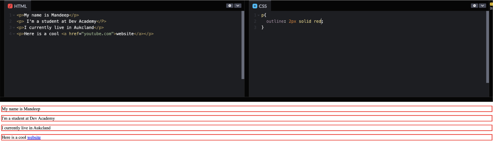
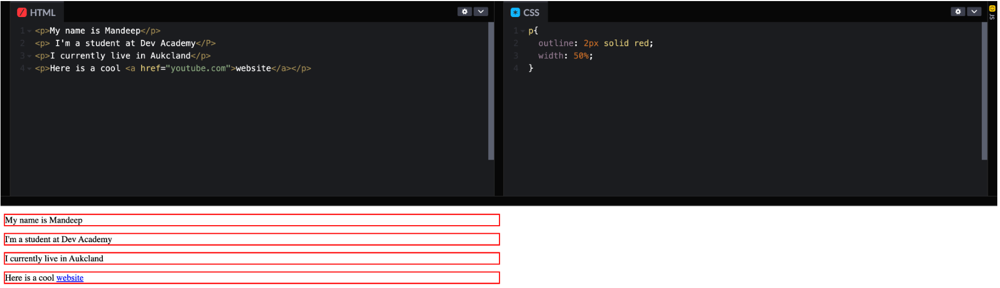
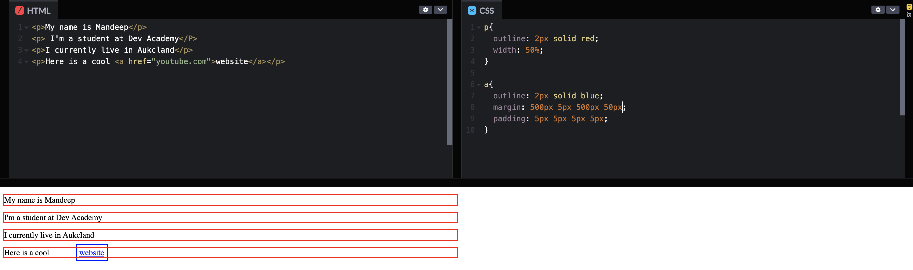
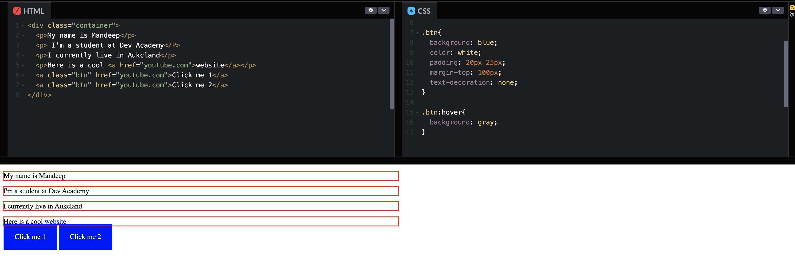
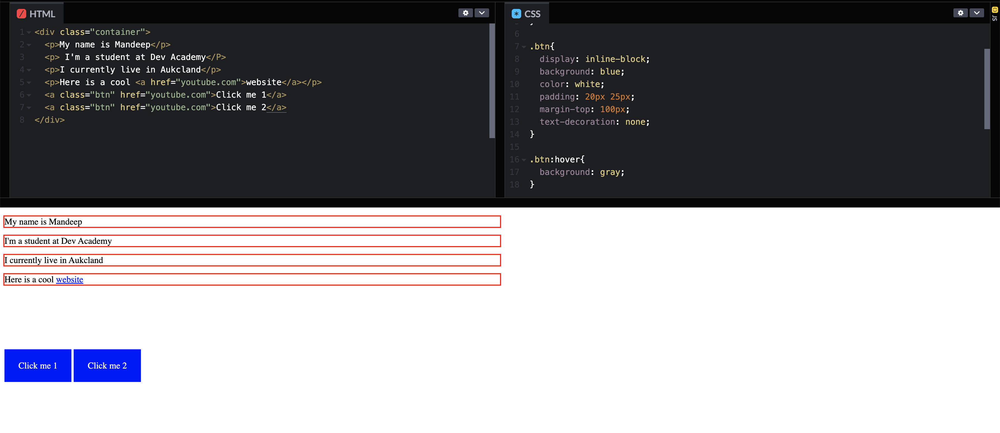

In the HTML and CSS world, almost everything is a block. Let’s take an example below-

Here we have added four "p" tags and one "a" and given an outline of 2px to distinguish between each blocks and
can see four blocks with a
red outline.
Some key points from the example above:
1. Block level elements always stack on top of each other even if the have space to go adjacent to each other
2. The default width of a block element is 100%
Let’s try to change the width of one of the blocks i.e "p" and you’ll see that the blocks still don’t go next to
each other and always stay on the same line and on top of each other.

Inline
Inline elements are used when your requirement is to stay on the same line, for instance, adding a link to a
different page within a text or statement.
From the example above, let’s add a style rule `outline: 2px solid blue` to the "a" element and see what
difference it makes.

Key points to note:
1. The outline we added to "a" is only taking the width of the content. This is a big distinction between block
level and inline where a block element will always force a new line.
2. Inline elements can’t have top-bottom paddings or margins but can add left-right margins or paddings,
however, the behaviour will be confusing. Also, adding top or bottom margin values doesn’t have any affect on
the element.
Below example shows how the link above shows with spaces added.

Now the question arises, what if we need such an inline element where we want to add a margin or padding that
actually works?
- - > The answer to the above question is Inline-Block!
Inline - Block
Let’s add a couple of "a" elements to our example above and we are going to make them look like buttons. I have
added a padding of top and right of 20px and 25px respectively. Here is it what it looks like:

If you take a closer look at the example above, the margin-top has no affect on the elements.
Now lets add a style rule of “display: inline-block” to our CSS file and see how that changes our webpage

Key points to note:
1. The margin of 100px is being respected
2. Padding of 20px-top and 25px-right is applying
3. The layout looks better than before where we didn’t add “display:inline-block” rule
Why Inline-Block?
One of the many use cases of an inline-block would be to add multiple buttons in a row. This is a very common
design pattern for a navigation and these buttons are links to some other pages both internal or external.
There are other ways we can achieve what inline-block does, like “display:flex”, however, it becomes a bit
complicated for something that can be achieved with a single style rule “dispaly: inline-block”.
Conclusion
For display; Inline-block, the width and height style rules applied to an element are respected like they would for a block level element. Where as for display: inline, only the right and left spaces (margin and padding) can be added, however, that too will have some design issues and is not recommended.